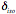
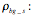
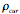
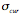
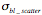

Documentation
AMSEL
Definitions
Namp = 6.24150948á1012
: absolute internal uncertainty (derived from counting statistic)
: absolute external uncertainty
: relative uncertainty (normally external?)
a: stable isotope (a) current
b: stable isotope (b) current
r: radioisotope counts
t: time
t_s: multiplication factor for time correction on radioisotope (to multiply with t)
iso: selectable isobar for background correction (to multiply with bg_s)

bg_s: background multiplication factor

N: number of active runs for an isotope


<bl_ra>: blank ratio (mean value), background corrected!

<std_ra>: standard ratio (mean value), background and blank corrected
<std_ba>: stable isotope standard ratio (mean value, for ba_nom)
ba_nom: nominal ratio ba (normally either 0.981 or 0.975 for carbon)
Uncertainties are in general absolute! (Except with index R)
Calculations for every run
Weighting factor

For b the same (uncertainty neglected).
Stable isotope ratio
Current correction:

 (you can
add both, a constant and a relative error!)
(you can
add both, a constant and a relative error!)
The same for b. One should maybe later add an error for the current correction?
Current corrected stable isotope ratio (used):


Standard corrected stable isotope ratio (used for 14C):


Æ13C for samples (used, not in per-mil!):


Radioisotope ratio
Raw radioisotope ratio (never used):


Current corrected ratio (used for ):


Background correction:


Current, time and background corrected ratio (used for bl_ra):


Blank corrected ratio (used):


Standard corrected ratio for a single run (never used):


The pmC value is then calculated:


Finally the age is calculated:


Calculations for every sample
Sum of radioisotopes:


Mean of currents:

 not
important
not
important
 not
important
not
important
Mean of Ratios (Used for ra and ra_bg. Used for <bl_ra>):

 if N=1:
if N=1: 


Mean of ratio with blank correction (used for <std_ra>):


s: standard mean index (s=1, if only one
standard mean is calculated for the hole measurement)
j: run index for runs with the same blank
mean

Mean of ratio with std and blank correction (final ratio for samples):


s: standard/blank mean index (s=1, if only
one standard mean is calculated for the hole measurement)
j: run index for runs with the same
standard/blank mean

Mean of ratio with std correction only (and no blank correction, not
important, never used?):


s: standard mean index (s=1, if only one
standard mean is calculated for the hole measurement)
j: run index for runs with the same
standard mean